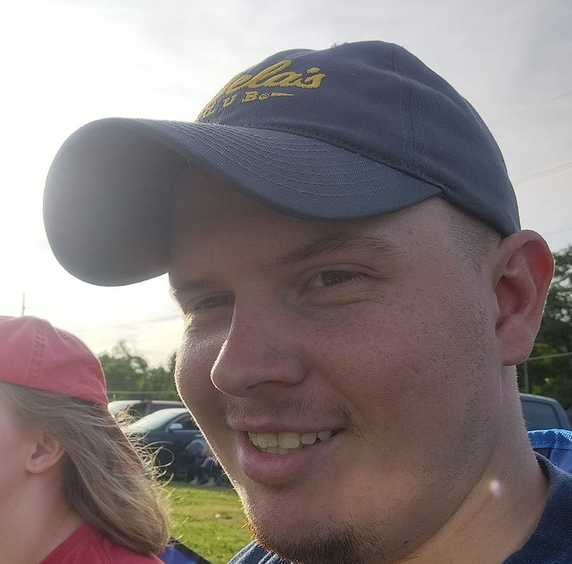
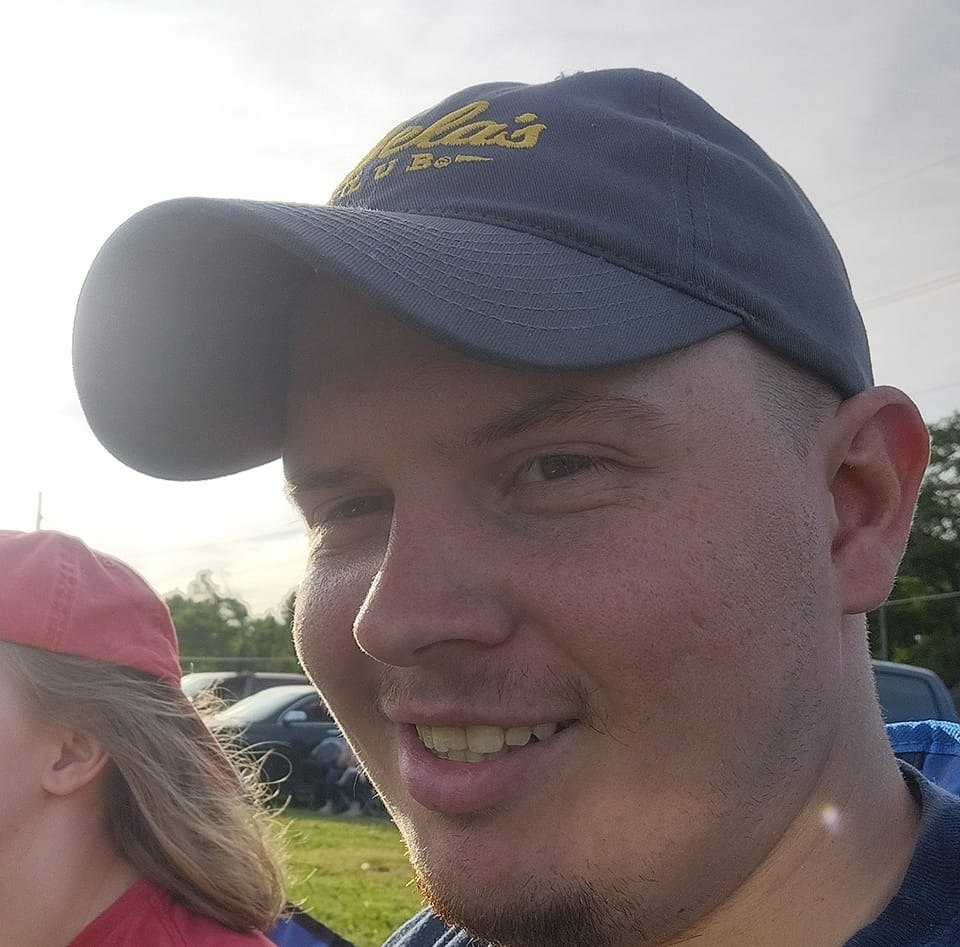

Hello everyone!, I am a beginner web developer/game developer. I do stream here and there with my friends and by myself. I also have a full-time job at a hardware store to make ends meet but my goal is to have enough followers and be constant on my development on my project for school. So far, I'm learning CSS, java and html. This web site you are on is the one I made by myself from my college. I am not a fast Typer but I am working on it. I think my typing speed is like a Minet and a half. for my streaming I play lots of games to pvp to rpg and it can be verity of games like rust to apex. I do not have a set schedule for now so I can stream once a week. I also play with other streamers as well, which is I will supply below they play games as well or other content as well so check them out! What keeps me awake is coffee or monsters I usley drink most of the time, but I mainly drink good old water.
my hobbies are playing video games and sketch or photo shop to make art. also that Is part of my school classes photo shop and story line and cartar development. I am attending Buttler community college for my associate degree and for my bachelor will probably WSU for my master's. as well and this portfolio will also be in my resume as well for future job so if you are the person reading this for hirer, please message me and I will get to you as soon as passable. I do have big ambison but I can get over my head a lot and get overwhelmed with the task, but I will always work with the issue and fix the problem, but I am a team player I understand with a grope of people can solve a problem a group of minds is better than one. at the long end as more I study about coding the more I realis I'm arguing with a stubborn child who don’t want to listen. But what I can explain about making a web site in my own way is html is the skeleton and the skin and CSS is nerves and java is the brain to make it work. If that make since why I want to be a web developer well, I manly want to be a game developer but if that does not pan out as plan making web site is a backup so I can enjoy what I'm going to do with this degree and have a successful life.
What I do with my spare time is watch anime and go for walks and be a little more active, so I won't be behind a monitor all day. Oh also I bike around Wichita and I just put a two stroke motor on it for faster transportation I do like supporting small or foren restrunt or business im not a big sports fan but because of my girlfriend im starting to like baseball and football but I do like to watch the eclamptic and gaming tournaments but I do make a lot of snack for the big game so far my favorite football team is the chefs but I don’t have a favorite baseball or gaming team. And I do like camping im not a huge fan of glamping. I like to be closer to mother nature just in a normal tent and listen to the animals sing through the night and day.
my streaming scedule
| day | time | game |
|---|---|---|
| monday | - | - |
| tuseday | - | - |
| wensday | - | - |
| thursday | - | - |
| friday | - | - |